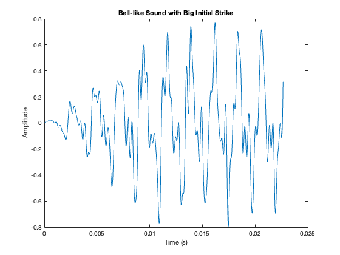

sample_rate = 44100;
duration = 4.0;
fundamental_freq = 440.0;
decay_rate = 0.5;
attack_duration = 0.01;
t = 0:1/sample_rate:duration-1/sample_rate;
harmonics = [];
for k = 1:7
detune_factor = 1 + 0.01 * k * randn;
amplitude = 1 / k;
harmonics = [harmonics; amplitude * sin(2 * pi * fundamental_freq * k * t * detune_factor)];
end
sound_wave = sum(harmonics, 1);
attack_samples = round(attack_duration * sample_rate);
attack_envelope = [linspace(0, 1, attack_samples), ones(1, length(t) - attack_samples)];
decay_envelope = exp(-decay_rate * t);
sound_wave = sound_wave .* attack_envelope .* decay_envelope;
sound_wave = sound_wave / max(abs(sound_wave));
sound(sound_wave, sample_rate);
audiowrite('big_strike_bell_like_sound.wav', sound_wave, sample_rate);
figure;
plot(t(1:1000), sound_wave(1:1000));
title('Bell-like Sound with Big Initial Strike');
xlabel('Time (s)');
ylabel('Amplitude');
